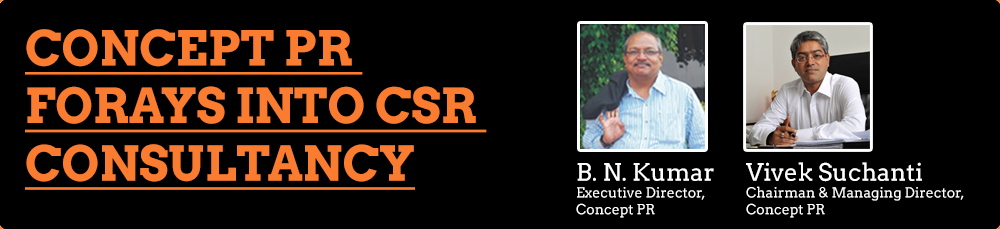

In a first in India’s Public Relation consultancy business, Concept PR has announced the launch of its CSR wing called Concept Community Relations (CR).
“With the new Companies Act making it mandatory for corporates to make CSR spend of at least 2% of their net profits, we expect that the community and social development landscape to witness a sea change. This also offers a huge opportunity for corporates to give back to the society,” Mr. Vivek Suchanti, Chairman and Managing Director of Concept Group, said:
Said Mr. B N Kumar, Executive Director of Concept PR who heads Concept CR initiative: “We have been advising companies on the need to concentrate on CSR as part of their social obligation rather than looking at it as a tax saver. We are now initiating an entire new division which will advise clients with a 360-degree approach on CSR.”
Concept CR will not only rope in select NGOs after a careful scrutiny, but also work on creative and unique ways of making the CSR spend meaningful. “BNK’s team, with their vast experience can identify the right CSR project or even customize it to suit a particular company’s business,” Mr. Suchanti explained.
Apart from CSR, the bouquet of consultancy services that Concept PR offers include: Corporate Communication, Media Relations, Investor relations, Crisis Management, Media Training, Capital Market practices, Internal Communication, Sports and Event Communication, Brand and Image Building, Roadshows and the new age Online Reputation Management and Social Media.
As per the new Companies Bill that has received Parliament’s seal of approval, Section 135 stipulates: “Every company having net worth of rupees five hundred crore or more, or turnover of rupees one thousand crore or more or a net profit of rupees five crore or more during any financial year shall constitute a Corporate Social Responsibility Committee of the Board consisting of three or more directors, out of which at least one director shall be an independent director.”
The CSR Committee will also have to formulate policy and monitor the implementation and report back to the Board of Directors.
“The Board ….shall ensure that the company spends, in every financial year, at least two per cent of the average net profits of the company made during the three immediately preceding financial years, in pursuance of its Corporate Social Responsibility Policy,” the Bill says.
The Act also stipulates that companies will have to give priority to local areas where they operate from, which makes it imperative for them to focus on local needs. The Act, thus, seeks to ensure an all round development of the geographies around a corporate entity.
Over the past decade or so, Concept PR has grown into a pan-India consultancy with ten offices and 40 associates understanding the local centric communication needs – be it linguistic or cultural. “Since we understand the local soil and the social pulse, we are better equipped to design and execute need-based and unique CSR projects,” said Mr. Kumar.
Under its service offerings, Concept CR will Ideate with client’s CSR teams to Identify, Initiate, Implement and Impact Check of the projects, apart from Image Building.
Since the Boards of Directors are accountable for every rupee that is spent, CSR activities may have to form part of the annual reports, much like the section on Corporate Governance. In the new, emerging transparency regime CSR spend will be most visible investment and the impact will therefore play a major role in a Company’s image, Mr Suchanti explained.
Formulating a CSR policy that fits into a particular company’s scheme of things will be a big challenge as the Companies Bill that has been passed by both the houses of Parliament and will shortly become an Act since the Presidential assent is imminent.
Concept PR is a leading PR and IR consultancy in the country with major clients spanning sectors like BFSI, infrastructure, real estate, power, aviation, transport, education, retail, tourism, lifestyle, entertainment, sports, textiles, gen and jewelry, health care amongst others. The agency is in a unique position to understand a corporate’s needs, mission and vision and above all the responsibilities of a Corporate Citizen.
“This is not going to be just another spend or a matter of routine communication exercise. Companies will have to take it very seriously and we are happy that we have geared up to meet the new challenge,” Mr. Kumar added.
B.N. KUMAR
Executive Director, Concept PR
9320048332
9820128332